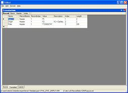

FillRed - Fixed-length record editor
Features
-
Edit fixed-length ASCII files using a defined layout
-
Allows for direct (= unstructured) editing of data in source view
-
Data layout stored in XML
Requirements
-
Developed and tested on Windows XP with .NET framework 2.0
License
-
FillRed is free.
-
Use this software at your own risk. I do not guarantee the
consistency and/or validity of any file edited with FillRed.
|
 |
Download FillRed (44 kB)
How to write conditions for optional fields
The internal fieldnames for a single record layout are:
Index
Name
IsRecordIdentifier
PredefinedValue
Format
Length
Occurence
RecordName
Description
IsOptional
Condition
IsEOR
A condition can only check the current record and only data fields already
parsed (no "look-ahead"). For example, if my record has a field named
'HasMoreData' which has possibly values 'Y' and 'N', a condition for a
succeeding, optional field would be:
(Name = 'HasMoreData') and (Value = 'Y')
Explanation: the condition looks for a field named 'HasMoreData' with a value
of 'Y'. If such a field is found, the optional field is parsed.
Version history
Planned improvements
-
Allow multiple occurences of fields
-
Validate field format
-
Allow user to choose between left and right padding
-
COBOL copybook import
June 15th, 2008 - 1.1.0.476
- Reads data filename from the command line (first argument)
- Now supports variable length fields. Set a length < 0 to indicate variable length.
ATTENTION: Variable length fields MUST be followed by a field with a predefined
value.
- Added a "hide in formatted view" flag to record definition (in order to hide technical
records such as 'separators')
- Added simple record navigation on "formatted" view
- Added an error reporting which will send e-mails to my support address on fatal
errors. Disable in the "About" dialog.
- Fixed several minor bugs
January 16th, 2006 - 1.0.0.321
-
Added layout validation on save of layout
-
Added more detailed parsing error messages
-
Source format allows for various line delimiters
-
Fixed several minor bugs
January 14th, 2006 - 1.0.0.241 (BETA)
-
Fixed copy/paste bug with grids
-
Added optional logging for troubleshooting
-
Add "optional fields" feature:
-
A condition is evaluated if present (for condition syntax see
MSDN DataColumn.Expression)
-
Othwise, the current data value is compared to the predefined value and read if
they match
-
If whether condition or predefined value are defined, but an EOR field is
present, the data is read if it doesn't match the EOR
January 11th, 2006 - 1.0.0.165 (BETA)
-
Initial version
-
Layout fields "Format", "Occurence" are not yet used
{kind=link}